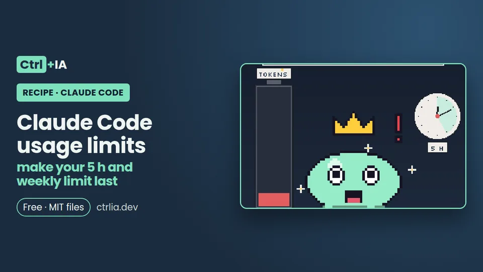

Recipe · Intermediate · 10 min
Claude Code usage limits: make your 5 h and weekly limit last
Read /usage and /context to see what eats your Claude Code limit and fix each cause: context, cache, subagents, model and effort level.

Tested with Claude Code 2.1.316 · reviewed
See the files on GitHub Free · MIT license
The problem
Your 5-hour session or your weekly limit runs out early and you don't know why. The usual move is to install a skill "to save tokens" without looking at what is actually spending. It is almost always a few causes: a context you drag around all day, cache misses, subagents and workflows running in parallel, and sessions that stay alive.
The solution
Claude Code 2.1.316 already ships what you need to see it: /usage (aliases /cost and /stats) shows how much you have used, what consumes it and what to change, and the f key applies some of the fixes. First you measure, then you fix each cause with a specific command, with no external tools.
One-minute diagnosis, inside Claude Code:
/usage # 5 h and weekly bars + what consumes them (d = 24 h, w = 7 days, f = apply fixes)
/context # what fills your context window right now
/effort status # current effort level
/tasks # background work in this session
/clear # start clean when you switch tasks (free)The same without opening the interface (does not use the conversation):
claude -p "/usage"
claude -p "/context"
claude agents # background sessions
claude stop <id> # stop one you no longer need1. First see how much you have used and what consumes it: /usage
Type /usage in the session (/cost and /stats also work; they are aliases). On a Pro, Max, Ultra, Team or Enterprise plan you will see three blocks:
- the plan bars (current 5 h session, week across all models and, if it applies, week for one specific model), each with its reset time;
- a "What's contributing to your usage?" block with recommendations;
- attribution by skills, subagents, plugins and MCP servers.
Press d or w to switch between the last 24 hours and the last 7 days. Each recommendation starts with a percentage: it is not what you save, but the share of your usage it applies to, and several rows can add up to more than 100 %. The figures are approximate and come from this machine's history: they do not include what you use from another PC or on claude.ai.
Real example from a PC on Max (1 Nov 2026):
96 % Give general-purpose subagents a cheaper model
36 % Start fresh when you switch tasks · run /clear
35 % Save workflows for big tasks · 315 agents ranThat already tells you where to start. The Session block (cost in dollars) is a list-price estimate meant for API users: on a subscription it is not your bill.
2. Apply the automatic fixes with the f key
Since 2.1.305, if the /usage footer says something like "f to fix 2 of 3", press f. Claude Code does two things:
- it directly runs the rows that end in an
/effortcommand (for example "Switch from max to high effort · /effort high"); - for the other rows it can handle, it sends Claude a single message with one step per row and asks it to show you each change before making it.
Rows that end in "run /compact" or "run /clear" are not applied on their own: you type that command. Rows that suggest trimming a file (for example "Trim ~/code/api/CLAUDE.md · 49k tokens per request") may go into the message or be left to you. In "f to fix 2 of 3", the first number is what will be applied and the second is what is shown. If Remote Control is connected, the f hint does not appear: disconnect it and open /usage again. Always review what Claude proposes to touch before accepting: it is your configuration.
3. Long context: /clear between tasks and /context to see the weight
Claude Code sends the whole conversation with every request, and each tool use sends another request with those results. Even though the cache makes rereading cheaper, a one-line question in a session that has been open all day still pays for the whole conversation. Three habits:
/clearwhen you switch to an unrelated task (first/renameso you can find it later with/resume)./clearcosts nothing;/compactdoes, because it reads the whole conversation to summarize it. More detail in /clear vs /compact./contextshows the grid of what fills your context: system prompt, tools, MCP, memory files (CLAUDE.md), skills and messages, with suggestions.- Keep
CLAUDE.mdunder about 200 lines and move instructions you only use sometimes into skills: skills load only when invoked (see a CLAUDE.md that works).
If /context shows an MCP server you don't use, turn it off in /mcp; and if there is an equivalent CLI (gh, aws, gcloud), the documentation considers it cheaper in context (see MCP for developers).
If you compact, tell it what to keep with a section in CLAUDE.md:
# Compact instructions
When compacting, keep the exact error messages, the paths of files touched and the reason for each decision.4. The cache: what breaks it and how to see it in /cost
On a subscription and within plan usage, the main conversation uses a one-hour cache; with usage credits, an API key or a cloud provider it drops to five minutes. The first message after a pause longer than that lifetime reprocesses the whole context.
Since 2.1.251, /cost (alias of /usage) adds a "Prompt cache (main)" line with the percentage served from cache, the misses, the re-cached tokens and whether the cache is warm or cold; since 2.1.260 it names the likely cause of the last miss.
What invalidates the cache, according to the documentation:
- switching model with
/model; - changing effort on most models (on Opus 5.5, Sonnet 5.5, Haiku 5.5 and Fable 5.1 with a key or subscription it is kept);
- turning fast mode on or off;
- connecting or removing an MCP server, or enabling or disabling a plugin;
- denying a whole tool;
- compacting, piling up many images and updating Claude Code.
Rule of thumb: choose model, effort and fast mode at the start, not halfway through; and don't /resume a huge, cold session just for one question.
5. Subagents, workflows and background agents that spend while you're not looking
Each subagent and each agent in a dynamic workflow makes its own requests, on top of the main conversation's; the attribution block in /usage shows their share. Concrete measures:
- Give simple subagents a cheaper model:
model: haikuin the subagent frontmatter, or theCLAUDE_CODE_SUBAGENT_MODELvariable as the default (the agent definition and the per-call model take precedence over it since 2.1.251). - Since 2.1.316,
CLAUDE_CODE_SUBAGENT_EFFORTsets the effort of subagents that have no other, instead of inheriting the session's. - Check
/tasks: it lists the session's background work, including finished subagents; stop whatever is still alive and you don't need. - Outside the session,
claude agentslists background sessions andclaude stop <id>stops them. - Watch out for
/loopand scheduled tasks: they run even while you are idle and send the whole context;/usagehas a Loops row since 2.1.243.
Agent teams use about 7 times more tokens when teammates work in plan mode, according to the documentation.
Both variables, in ~/.claude/settings.json (together with the status line from step 7):
{
"env": {
"CLAUDE_CODE_SUBAGENT_MODEL": "haiku",
"CLAUDE_CODE_SUBAGENT_EFFORT": "low"
},
"statusLine": {
"type": "command",
"command": "~/.claude/statusline.sh"
}
}6. Model and effort: don't use the most expensive one for everything
The official documentation puts it this way: Sonnet handles most coding tasks well and costs less than Opus; keep Opus for architecture decisions or multi-step reasoning. Switch with /model (press s in the picker to apply it to this session only) or start each terminal with --model. Remember step 4: switching model mid-conversation loses the cache, so do it at the start.
Effort counts too: on Opus 5.5, Sonnet 5.5 and Haiku 5.5 the default is medium; /effort status tells you which one you have (on our PC: "auto (currently medium)") and /usage warns you if you are on max. max only lasts for the session.
If a message says "You've hit your session limit" or "weekly limit", switching model does not give you access back, because that limit is shared by all models; with "You've hit your Opus limit" you can carry on with another model. While you wait: /rate-limit-options offers to wait and continue only after the reset (2.1.234 or later), and /usage-credits if you have usage credits enabled.
7. Keep an eye on it without opening /usage: a status line with 5 h and week
The status line receives on standard input a JSON with rate_limits.five_hour.used_percentage and rate_limits.seven_day.used_percentage (only on Pro, Max and Ultra, and after the session's first response), plus context_window.used_percentage. With a few lines of script you always see the model, the context and both limits. It uses python3 so it does not depend on jq.
Save it as ~/.claude/statusline.sh (in the repository it is en/statusline.sh):
#!/bin/bash
# Claude Code status line: model, context and 5 h / weekly limits (no jq)
python3 -c '
import json, sys
d = json.load(sys.stdin)
ctx = (d.get("context_window") or {}).get("used_percentage") or 0
parts = ["[%s] context %d%%" % (d.get("model", {}).get("display_name", "?"), ctx)]
rl = d.get("rate_limits") or {}
for key, name in (("five_hour", "5 h"), ("seven_day", "week")):
v = (rl.get(key) or {}).get("used_percentage")
if v is not None:
parts.append("%s %d%%" % (name, v))
print(" · ".join(parts))
'Make it executable with chmod +x and add the statusLine key from step 5 to ~/.claude/settings.json. With the bar in sight the rule is simple: if context goes past 60-70 % and you are about to switch tasks, /clear; if the 5 h window is high, postpone anything that may launch many agents.
Check it
Test the bar without opening Claude by piping in a sample JSON:
chmod +x ~/.claude/statusline.sh
echo '{"model":{"display_name":"Opus 5.5"},"context_window":{"used_percentage":42.3},"rate_limits":{"five_hour":{"used_percentage":23.5},"seven_day":{"used_percentage":41.2}}}' | ~/.claude/statusline.shExpected output:
[Opus 5.5] context 42% · 5 h 23% · week 41%What we tested on a Linux PC with Claude Code 2.1.316 and a Max account (1 Nov 2026): claude -p "/usage" returned the session and weekly bars, the recommendations and attribution by subagents and MCP; claude -p "/context" returned the table by category; /effort status with Opus 5.5 answered "auto (currently medium)"; and the status line script worked with the sample JSON. What we have not measured yet: the real savings over several days after applying f, /clear and haiku subagents (compare it yourself with d and w in /usage), nor the "Prompt cache (main)" line in the interface, which does not appear with -p.
Why it works
Every request sends the whole conversation, so context size, cache misses and the number of agents making requests at once are what drive your consumption. /usage splits that consumption by source and suggests the change that weighs most, instead of you guessing. Sources: costs, prompt caching, status line, commands, model configuration and the CHANGELOG.
Common mistakes
- You switch to Sonnet and are still blocked → the warning was "session limit" or "weekly limit", shared by all models → wait for the reset (
/rate-limit-options) or use/usage-credits. - The
fhint does not appear in/usage→ Remote Control is connected → disconnect it and open/usageagain. - The recommendation percentages add up to more than 100 % → they are not savings, but the share of usage each one applies to → start with the highest row.
- The cache goes cold mid-session → you changed model, effort or fast mode, or touched MCP or plugins → choose all of that at the start.
- The status line does not appear → a custom
statusLineneeds you to have accepted trust for the folder → accept it;claude --debuglogs the reason. - The bar shows neither 5 h nor week →
rate_limitsonly arrives on Pro, Max and Ultra, and after the session's first response → send a message and look again.
FAQ
How many messages or tokens does each plan give in 5 hours?
There is no fixed figure published in the Claude Code documentation: it depends on the plan, the model and the size of the context. Check claude.com/pricing for your plan and /usage for your real percentage and reset time.
Why does /usage show a dollar cost if I pay a subscription?
The Session block is a list-price estimate meant for the API. On Pro, Max or Ultra what matters are the plan bars and the breakdown.
Does switching to Sonnet give me access back if I ran out of limit?
If the warning is a session or weekly one ("session limit", "weekly limit"), no: it is shared by all models. If it is "Opus limit", yes, you can carry on with a model from another family.
Do background agents spend even if I'm not watching them?
Yes: every subagent, workflow, scheduled task or teammate makes its own requests. /usage shows their share, and /tasks or claude agents let you see and stop whatever is still alive.
Does /usage include what I use on another PC or on claude.ai?
No. The breakdown is approximate and is calculated from this machine's history; the plan bars do reflect your account.
Does /compact save limit?
In the long run it reduces what you send with each message, but compacting is itself a big request. If you don't need continuity, /clear costs nothing.